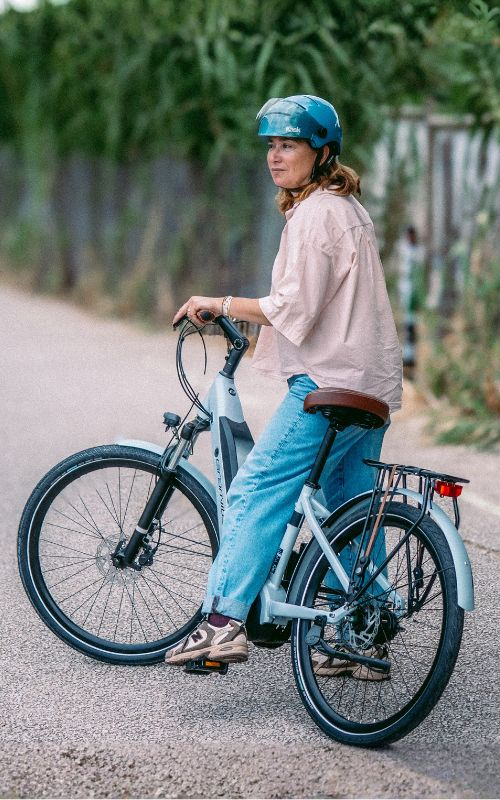

Alquiler por horas y días
Disfruta de la ciudad a tu propio ritmo con nuestras bicicletas urbanas. Cada reserva incluye casco y candado de seguridad, lo que te brindará una experiencia completamente tranquila y sin preocupaciones durante el recorrido.
